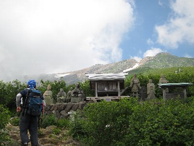
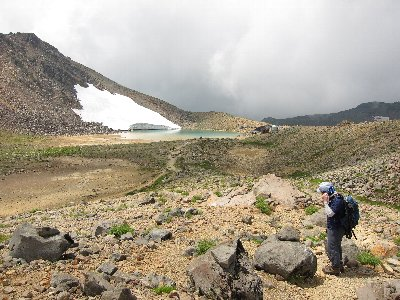
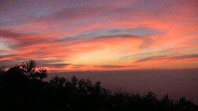
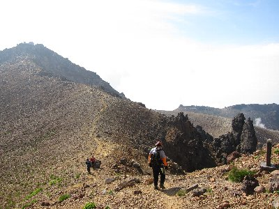
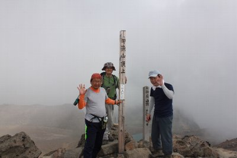

御嶽山登山 | 2012年7月 幹事：Ryuu |
|---|---|
| 長野県と岐阜県にまたがって鎮座する御嶽山（御岳山）。周辺にスキー場があるため、冬に訪れたことが有る人はいらっしゃるでしょう。いくつかの峰が合体（外輪山）しているため、山頂が平らに見える独立峰。最高峰の剣ヶ峰は3,067ｍあり、日本で14番目に高い山です。日本百名山でもあります。 また、信仰の山としても有名で、白装束の人々が最高点の剣ヶ峰にある御嶽神社奥社を目指しています。 剣ヶ峰だけなら日帰りも可能なのですが、ここはあえて御嶽山山頂と言うべき外輪山を南から北まで行ってみようと、一泊二日で北端の継子岳2,858mまで行ってみることにしました。剣ヶ峰は南端。マイア高原スキー場から見える山は、この継子岳ですね。 | |
|  女人堂近辺から |  二ノ池が見えてきました |
| 今回のメンバーは、Ryuu、suger、べっしーの3名です。静岡から掛川を経由し、高速道路にて御岳ロープウェイまで。 9時過ぎのロープウェイ（ゴンドラ）に乗り9時半登山開始。ロープウェイで2,160mまで登れるので楽ちんですね。 1時間位は森の中を歩いている感じで、景色は楽しめません。女人堂まで来たら休憩です。ここを過ぎると視界が開けて、目指す山肌が見えてきます。 と、ここでsugerのザック肩ひもが一本ちぎれてしまう事態に。なんとか縛って対処しますが、始まったばかりにキツイです。 救助用のヘリが、上部の谷筋でホバリングしてます。だれか救急要請したようです。何があったのでしょう。 | |
 二ノ池の雪渓（夏なのに） |  賽の河原から摩利支天山へ |
| この辺りから景色は良いが傾斜はきつくなり、一歩一歩前進という感じです。岩がゴロゴロ＋緑の草で綺麗です。 なんとか外輪山の内側に入り、二ノ池に到着。ここでお昼にします。この辺りは草もなく、火山系の地肌が見えて、殺風景ですね。 御嶽山は火山湖として、小さいながらも池がいくつかあるんです。ちゃんと水があります。対岸には雪渓(7月に雪です！)もあり、高い山に来たんだな〜って感じられます。 | |
 三ノ池が見えます |  コマクサ群生地 |
| お昼を食べたら、賽の河原を通って摩利支天山を経由し（山頂は通らず）、五の池小屋まで。ここが本日の宿泊地です。 荷物を小屋にテポして、さらに北上し継子岳を目指します。緩やかな登りで、岩と高山植物のコラボがグットです。コマクサも大量に咲いてました。途中で雷鳥もいまして、これが余り逃げずにいるものだから、じっくり見ちゃいました。 岩だらけの継子岳で記念写真を撮り、山小屋に帰ってビールの時間です。登山の後の小屋ビールはウマイ！ 雨がパラパラと降ってきましたが、強く降る事もなくて心地いいです。 外で涼んでいると寒くなってきました。小屋では薪ストーブが点けてあり、その上で日本酒を温めたりして、これまたウマイ。 この日の小屋は混んでいて、一つの布団に二人の状態ですが、布団が通常サイズ（山小屋サイズは狭い）なので、二人で寝ても狭くありません。毛布は人数分くれたし、問題ないです。 | |
 コマクサ |  雷鳥。凄く近いんです |
| 翌朝、日の出を見ようと4時に起床。良い感じの朝日が拝めました。山頂付近の小屋泊まりはこれが良いですよね。今日も天気がいい。 朝食後、６時半出発。本日は剣ヶ峰を目指します。 昨日通った賽の河原を抜けて、剣ヶ峰が属する火口の縁に取り付きます。いわゆるお鉢廻りをして、最後に剣ヶ峰到着のコースです。 このお鉢が、意外に険しい箇所が有ったりして楽しませてくれます。山登りしたこと無い人は、ちょっとビビりますね。実際、軽装で来ていた人が、ビビって動けなくなっていました。御嶽神社を参拝に来た人達がついでに廻っちゃうんだよね。 いろいろと風景が変わって楽しいお鉢めぐりも、御嶽神社奥社で終点です。さすがに人が沢山います。ここが剣ヶ峰3,067mです。社よく建てましたね。 | |
|  朝焼け |  さあ、今日もガンバロー！ |
| お参りをして記念写真を撮って、そうそうに下山、と言うかついでに王滝頂上を目指します。頂上だけど、剣ヶ峰からみれば、ほぼ下りでして30分ほどで到着。剣ヶ峰から来ると、さして感動もなく「行った」だけであり、「じゃあ下山しよう」となりまして、後はひたすら御岳ロープウェイをめざしました。 下りは景色も見ずにドンドンと降りて行きまして、御岳ロープウェイの頂上駅でお昼を頂き、降りてから温泉入ってサッパリして帰りました。 予想外に面白かった御嶽山ですが、紅葉の時期も良いようです。上にテント場が有れば最高なんですが、手軽に登れるので皆さんチャレンジしてください。 | |
|  御嶽お鉢周り |  御嶽 剣ヶ峰山頂 この時だけ雲が・・・ |
| 写真：べっしー＆Ryuu コメント：べっしー | |